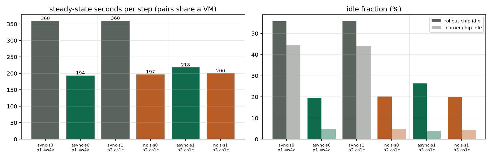
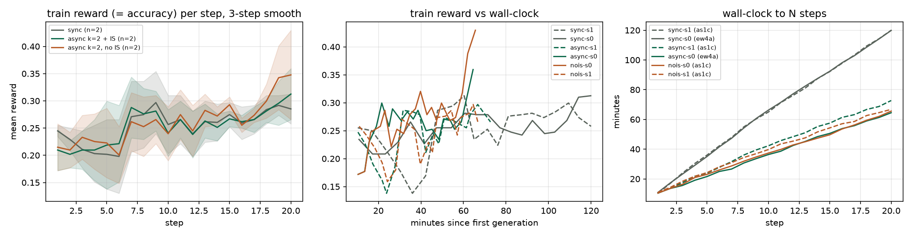
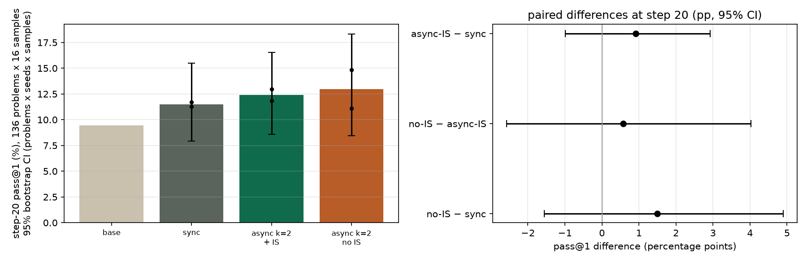
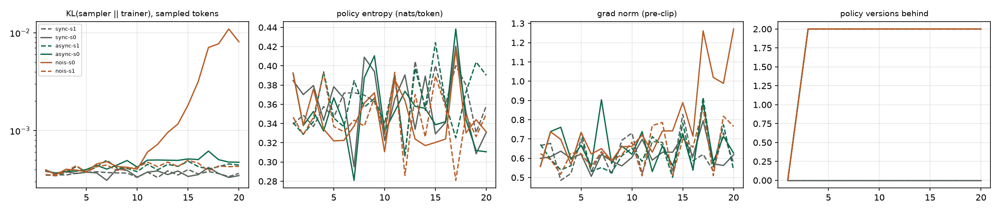

TPU Builders study
Async vs sync RL rollouts on TPU v6e
A controlled GRPO comparison on Qwen3.5-2B / AIME. Overlapping generation and learning with bounded staleness cuts wall-clock per step by 1.86× with 6k-token rollouts (1.61× at 3k), and quality stays equivalent within ±3 pp. A no-IS ablation shows the importance correction is cheap insurance at lag 2. This is the same systems thesis as the Miles and PyTorch Conf async-RL talks, measured on TorchTPU + vLLM.
Summary
TLDR
Longer run (6,144-token cap, 3 arms × 2 seeds, 20 steps). Step-20 pass@1 on 136 problems (AIME 2024–2026, BRUMO 2025, HMMT 2025–2026) × 16 samples, with 95% bootstrap CIs over problems × seeds × samples: sync 11.49% [7.93, 15.51], async k=2 + IS 12.41% [8.57, 16.52], async k=2 without IS 12.98% [8.46, 18.34]. The base model scored 9.47%. In the matched pair on one VM, async took 64.5 min for 20 steps versus 119.9 min for sync. The learner is now the bottleneck: rollout idle fell from 56% to 20–26% and learner idle from 44% to 4–5%.
Do we need IS? Not for accuracy at lag 2 over 20 steps. But one of the two no-IS seeds began drifting off-policy from step 11: its sampler-vs-trainer KL grew 27× and its max IS ratio reached 26.6, while both IS seeds stayed flat. The correction is free, so keep it.
First study (3,072-token cap, 40 steps). 1.61× faster; async − sync at step 40 was −0.4 pp (95% CI −3.9 to +2.9). Caveats: both studies are short. In the longer run, 87% of base samples hit the cap in the pilot, there were only 2 seeds per arm, and the Spot VMs were in different regions, so wall-clock is compared only within a VM pair. Spend was $64.08 of a $90 cap.
Follow-up
Longer run (6k cap, 3 arms × 2 seeds)
This run uses the same code as the first study, with 6,144-token answers, a third arm and a harder 136-problem eval. Two v6e-4 Spot VMs came out of a multi-region capacity race: europe-west4-a ($7.13/h) and asia-south1-c ($6.25/h). Each VM ran a pair of runs at once, on chips 0/1 and 2/3. The run was 20 steps (the re-price cut it from 60 to fit the $90 cap), with 16 prompts × 8 samples, temperature 1.0, and prompts filtered by a pilot profile. The learner used --mb-tokens 8192, after 16,384 hit an HBM OOM on the first train step.
| Arm | What it does |
|---|---|
| sync | k=0: generation waits for the latest weights every step |
| async k=2 + IS | Fixed lag 2; learner recomputes log-probs and applies truncated IS against vLLM behaviour log-probs (w ≤ 2) |
| async k=2, no IS | Fixed lag 2; token trajectories only. Stale samples are treated as on-policy (ratio ≡ 1); sampler log-probs are logged as diagnostics only |
Speed: within-VM pairs
Wall-clock is only compared within a pair: two runs at once on one VM, sharing its host. Different pairs ran on different Spot machines and regions.
| Pair (VM) | Comparison | s/step | Wall to 20 | Ratio |
|---|---|---|---|---|
| p1 (europe-west4-a) | sync-s0 vs async-IS-s0 | 359.6 vs 193.5 | 119.9 vs 64.5 min | 1.86× |
| p2 (asia-south1-c) | sync-s1 vs no-IS-s0 | 360.0 vs 196.8 | 120.0 vs 65.6 min | 1.83× |
| p3 (asia-south1-c) | async-IS-s1 vs no-IS-s1 | 218.2 vs 200.3 | 72.7 vs 66.8 min | 1.09× |
A sync step pays generate + train + publish (157 + 198 + 5 ≈ 360 s). An async step pays only the slower stage, which is now training (182–207 s). The learner is the bottleneck, so staleness sits at k=2 on 18 of 20 steps. Rollout idle fell from 56% to 20–26%, and learner idle from 44% to 4–5%. Generated tokens/s rose from about 1,900 to about 3,300–3,450. Pooled over all VMs, async-IS is 1.75× faster than sync (95% CI 1.65–1.86). IS adds no compute, so the 9% gap in p3 is run-to-run noise: async-IS-s1 trained 4% more tokens.


Quality: step-20 pass@1
| Arm | pass@1 (95% CI) | Seeds | Gain over base |
|---|---|---|---|
| base | 9.47% | – | – |
| sync | 11.49% [7.93, 15.51] | 11.72%, 11.26% | +2.0 pp [+0.2, +4.0] |
| async k=2 + IS | 12.41% [8.57, 16.52] | 12.96%, 11.86% | +2.9 pp [+0.7, +5.1] |
| async k=2, no IS | 12.98% [8.46, 18.34] | 14.84%, 11.12% | +3.5 pp [+0.4, +7.2] |
| Contrast (paired by problem) | Difference | 95% CI | 90% CI | Equivalent at ±3 pp? |
|---|---|---|---|---|
| async-IS − sync | +0.9 pp | [−1.0, +2.9] | [−0.7, +2.6] | yes |
| no-IS − async-IS | +0.6 pp | [−2.6, +4.0] | [−2.2, +3.5] | no (too wide) |
| no-IS − sync | +1.5 pp | [−1.6, +4.9] | [−1.2, +4.3] | no (too wide) |
CIs come from a hierarchical bootstrap that resamples problems, seeds and samples (10,000 draws). Equivalence uses a two-one-sided test (TOST): the 90% CI must lie inside ±3 pp. About 9 of 16 prompt groups per batch carried gradient, compared with 3.5 in the first study.

Ablation
Do we need behaviour logprobs / IS? (no-IS ablation)
Accuracy: no detectable cost from dropping IS at lag 2 over 20 steps (no-IS − async-IS = +0.6 pp, 95% CI −2.6 to +4.0). Stability: one of the two no-IS seeds started to drift. The diagnostic below is the KL between the sampling policy (vLLM, 2 versions back) and the current trainer, measured on the sampled tokens.
| Run | KL steps 1–5 | KL steps 16–20 | Max IS ratio | Grad norm mean (max) |
|---|---|---|---|---|
| sync-s0 / s1 | 3.7e-4 / 3.6e-4 | 3.6e-4 / 3.6e-4 | 2.10 / 9.45 | 0.62 / 0.62 |
| async-IS-s0 / s1 | 3.9e-4 / 3.8e-4 | 5.2e-4 / 4.3e-4 | 3.06 / 2.37 | 0.66 / 0.63 |
| no-IS-s0 | 3.9e-4 | 7.4e-3 (peak 1.1e-2) | 26.6 | 0.77 (1.27) |
| no-IS-s1 | 3.8e-4 | 4.3e-4 | 2.54 | 0.65 |
no-IS-s0 tracked the other runs for 10 steps. From step 11 its mismatch rose on almost every step, to 27× its starting level, and its gradient norm passed the 1.0 clip on 3 of the last 5 steps. It also had the highest train reward and the best pass@1 (14.8%), so 20 steps cannot tell faster learning apart from the start of an instability. Both IS-corrected seeds stayed at 3.5–6.2e-4 throughout.
Verdict. At lag 2, lr 1e-6 and 20 steps, IS is not needed for accuracy, but it is worth keeping as a safety rail. One of two no-IS seeds showed a 27× growth in policy mismatch that the IS runs never showed, and the correction is free: vLLM already returns the log-probs, and both arms run at the same speed. The sync runs share the same 3.6e-4 KL floor, so that floor comes from numerics (fp8 KV cache vs the bf16 trainer), not from lag.

Method
Setup (first study)
| Model | Qwen/Qwen3.5-2B, non-thinking chat template |
|---|---|
| Hardware | 1× ct6e-standard-4t (TPU v6e-4), Flex-start, asia-northeast1-b. Sync and async of each seed ran concurrently on chip pairs 0/1 and 2/3. |
| Stack | vllm/vllm-torchtpu:v0.32.0 — torch 2.13, torch_tpu 0.2, vLLM 0.32 |
| Data / algo | Train AIME 1983–2023; eval AIME 2024+2025. GRPO with exact boxed-answer match reward. 16 prompts × 8 samples, max 3,072 new tokens, 40 steps, seeds 0 and 1. |
| Loss | Truncated importance sampling: w = min(exp(logp_cur − logp_beh), 2), detached; token-mean over nonzero-advantage sequences. |
| Async rule | Batch b trains at step b under policy version b. Rollout may start batch b once version ≥ b−k (k=2). No weight snapshots stored; learner recomputes log-probs; weights pushed as safetensors on /dev/shm (~1.8 s in-place vLLM reload). Sync is the same code with k=0. |
Measurements
Results (first study)
Speed and utilization
| Run | Wall to 40 | s/step | Gen tok/s | Rollout idle | Learner idle |
|---|---|---|---|---|---|
| sync (mean) | 85.4 min | 128.1 | 2,902 | 39.5% | 60.4% |
| async k=2 (mean) | 53.0 min | 79.5 | 4,698 | 1.7% | 36.4% |
| speedup | 1.61× | ||||


Learning quality
Train-reward curves overlap step-for-step. Eval pass@1 (AIME 2024+2025 combined):
| Step 20 | Step 40 | |
|---|---|---|
| sync (mean of 2 seeds) | 8.65% | 9.38% |
| async k=2 | 9.38% | 8.96% |
| base | 7.08% | |
async − sync at step 40: −0.4 pp (95% CI −3.9 to +2.9, from a hierarchical bootstrap over problems, seeds and samples; an earlier version resampled only problems and reported −2.1 to +1.2). At step 20: +0.7 pp (−2.8 to +4.7). Trained − base at step 40: +2.1 pp (−0.2 to +4.5).


Staleness and the importance correction
Generation is the bottleneck, so the learner is usually one version ahead. Behavior→current KL was the same in sync and async (~3.4–3.7×10⁻⁴): the gap is mostly vLLM fp8 KV vs bf16 trainer numerics, not policy lag. Truncated IS is needed in both modes.

Limits
Caveats & cost
Longer run:
- Only 20 steps (budget): the re-price cut 60 to 20 to fit the $90 cap, so the no-IS drift had only 9 steps to develop.
- Weak reward signal. In the pilot profile, 87% of base samples hit the 6,144 cap; 67–75% of training rollouts were still truncated.
- 2 seeds per arm. The no-IS seeds disagree (14.8% vs 11.1%), so its CIs are wide.
- Spot VMs in different regions (europe-west4 vs asia-south1). Wall-clock is compared only within a pair. The two sync runs agree to 0.1% across regions.
- Memory fix. The first p1/p2 attempts OOMed at --mb-tokens 16384. Both restarted from scratch at 8,192, and only the restarts are reported.
Longer-run cost: $64.08 of the $90 cap. That is asia-south1-c Spot $35.32 (pilot, p2, p3), europe-west4-a Spot $26.79 (p1, including the wait for the pilot and the OOM restart), early aborted boots $0.98, the GKE fallback cluster $0.97 and a dry run $0.02. Every resource was deleted except the compile-cache bucket.
First study:
- Short / weak signal. 40 steps; only ~3.5 of 16 groups per batch carried gradient; ~88% of samples hit the 3,072-token cap in non-thinking mode.
- Unbalanced chips. 1 rollout + 1 learner leaves ~36% learner idle even in async. A 3:1 split would likely raise the speedup further.
- Learner MFU is low (~3% eager). torch.compile failed on Qwen3.5 Gated DeltaNet view-stride errors.
- Zone. Preferred Spot/Flex zones were exhausted; all numbers are from asia-northeast1-b Flex-start.
Cost: ≈ $22.1 for 4.09 h at $5.40/h Flex-start (including setup). Sync ≈ $3.9 and async ≈ $2.5 per 40-step run on 2 chips. Compile-cache bucket (~3.8 GB) kept on purpose.
Bibliography
References
- Yuan, Yueming. “Miles: RL post-training for the new era of scale and workloads.” PyTorch Conference 2026 (talk). Also: RadixArk / PyTorch Blog, “Miles: A PyTorch-Native Stack for Large-Scale LLM RL Post-Training,” 30 Jun 2026. Talk slides (PDF) · Blog post.
- Pasqualin, Lucas; Pintz, Danielle; Wang, Allen; Afzali, Amir. “TorchStore: What We Learned Building Distributed Storage Solutions for AsyncRL.” PyTorch Conference Europe 2026, 7 Apr 2026, Paris. Session page · meta-pytorch/torchstore.
- PyTorch Team. “Introducing torchforge – a PyTorch native library for scalable RL post-training and agentic development.” PyTorch Blog, 23 Oct 2025. Blog post.
- Hugging Face TRL. AsyncGRPOTrainer / asynchronous GRPO (experimental): background vLLM rollouts, max_staleness, NCCL weight sync. See also agentic RL sessions at PyTorch Conference North America 2026. huggingface/trl · NA 2026 session roundup.